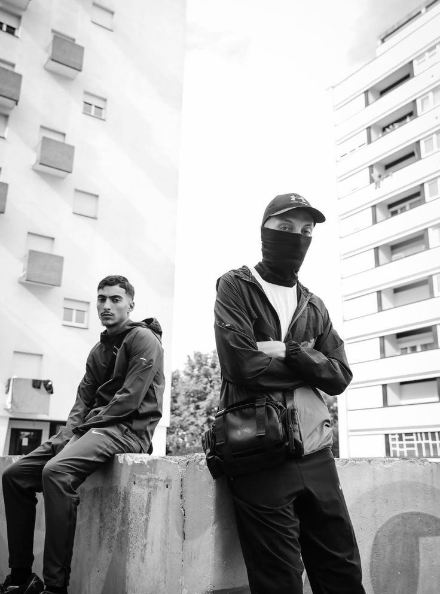
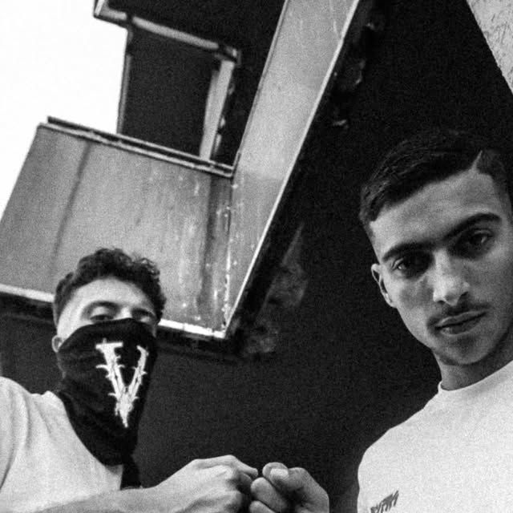

Clique sur l'image pour l'agrandir


Saïf & Pato sont deux rappeurs originaires du Vaucluse (84), issus de la scène rap indépendante locale. Ils construisent chacun un univers bien distinct, tout en partageant une même identité artistique sombre et authentique. Saïf développe un rap mélancolique et réfléchi, avec des textes travaillés, une atmosphère froide et une approche très introspective de la vie et de la rue. Pato, lui, adopte un style plus direct et street, marqué par des productions brutes, un flow efficace et des récits centrés sur le quotidien et les tentations. Ensemble, ils forment un duo complémentaire, souvent réunis sur des morceaux où leurs styles se mélangent pour créer une ambiance forte et cohérente. Ce site permet de découvrir leurs projets, leurs sons principaux et l’évolution de leur univers musical au sein du 84.
Voir leurs sons